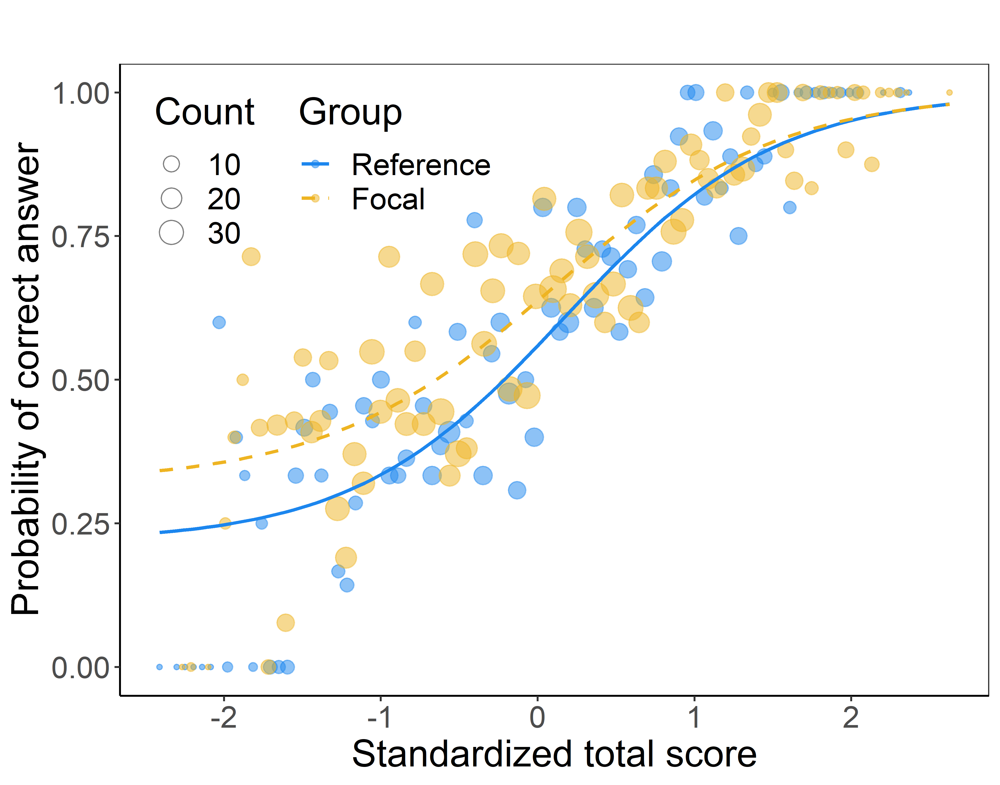
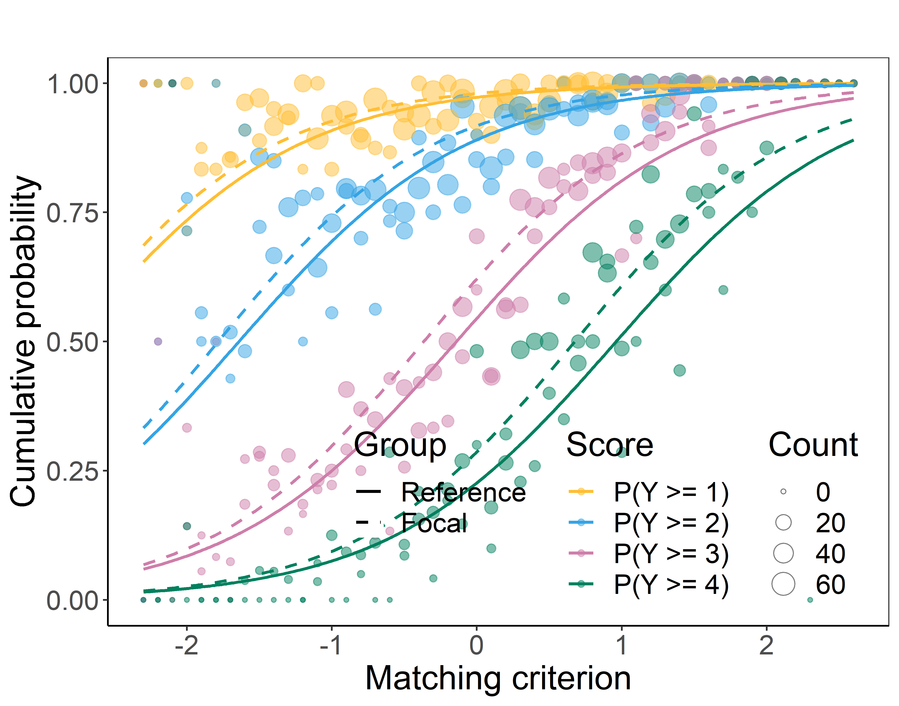
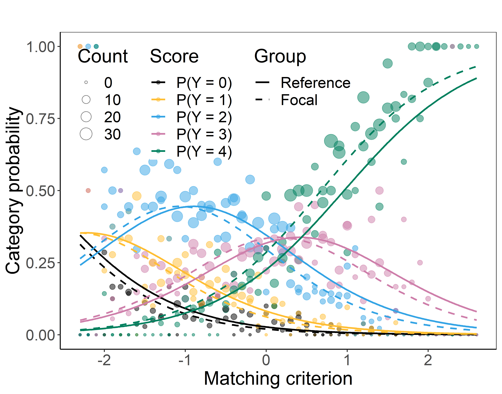

DIF and DDF Detection by Non-Linear Regression Models.


Description
The difNLR package provides methods for detecting differential item functioning (DIF) using non-linear regression models. Both uniform and non-uniform DIF effects can be detected when considering a single focal group. Additionally, the method allows for testing differences in guessing or inattention parameters between the reference and focal group. DIF detection is performed using either a likelihood-ratio test, an F-test, or Wald’s test of a submodel. The software offers a variety of algorithms for estimating item parameters.
Furthermore, the difNLR package includes methods for detecting differential distractor functioning (DDF) using multinomial log-linear regression model. It also introduces DIF detection approaches for ordinal data via adjacent category logit and cumulative logit regression models.



Installation
The easiest way to get difNLR package is to install it from CRAN:
install.packages("difNLR")Or you can get the newest development version from GitHub:
# install.packages("devtools")
devtools::install_github("adelahladka/difNLR")Version
Current version on CRAN is 1.5.2-2. The newest development version available on GitHub is 1.5.3.
Reference
To cite the difNLR package in publications, please, use:
-
Hladka, A. & Martinkova, P. (2020). difNLR: Generalized logistic regression models for DIF and DDF detection. The R Journal, 12(1), 300–323, https://doi.org/10.32614/RJ-2020-014
-
Drabinova, A. & Martinkova, P. (2017). Detection of differential item functioning with nonlinear regression: A non-IRT approach accounting for guessing. Journal of Educational Measurement, 54(4), 498–517, https://doi.org/10.1111/jedm.12158
To cite new estimation approaches provided in the difNLR() function, please, use:
-
Hladka, A., Martinkova, P., & Brabec, M. (2025). New iterative algorithms for estimation of item functioning. Journal of Educational and Behavioral Statistics. Online first, https://doi.org/10.3102/10769986241312354
Try online
You can try some functionalities of the difNLR package online using the ShinyItemAnalysis application and package and its DIF/Fairness section.
Getting help
In case you find any bug or just need help with the difNLR package, you can leave your message as an issue here or directly contact us at hladka@cs.cas.cz